Flexible GOGGLES
>unbleached cotton
>3D printed TPU frame
>mirrored lens
This item represents symbiosis between natural fabrics and 3D printed structures. By reimagining established products and altering their traditional materials, introducing new ways for us to engage with eyewear.
The evolution of this product was a result of creating many prototypes, allowing me to understand which functions needed to be added or removed.
For instance, the cotton band not only serves as a packaging system but can also be used as a way to clean the lenses.
This frame is a representation of how 3D printing combined with flexible materials could be implemented in our daily used objects, garments and other accessories.
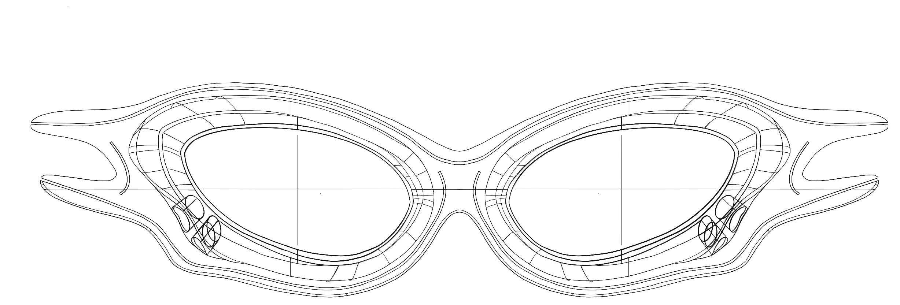
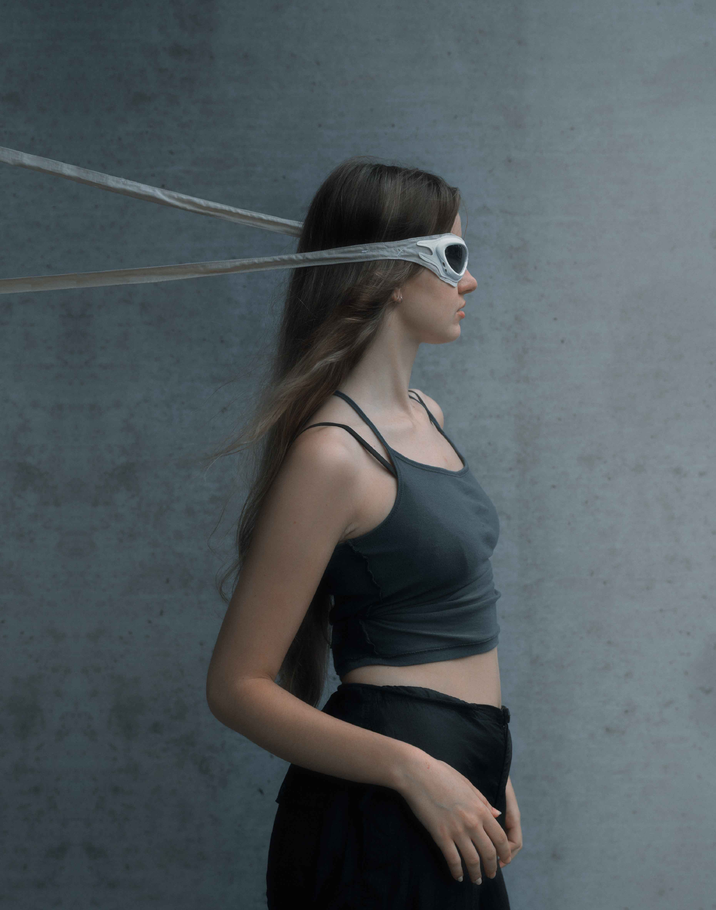
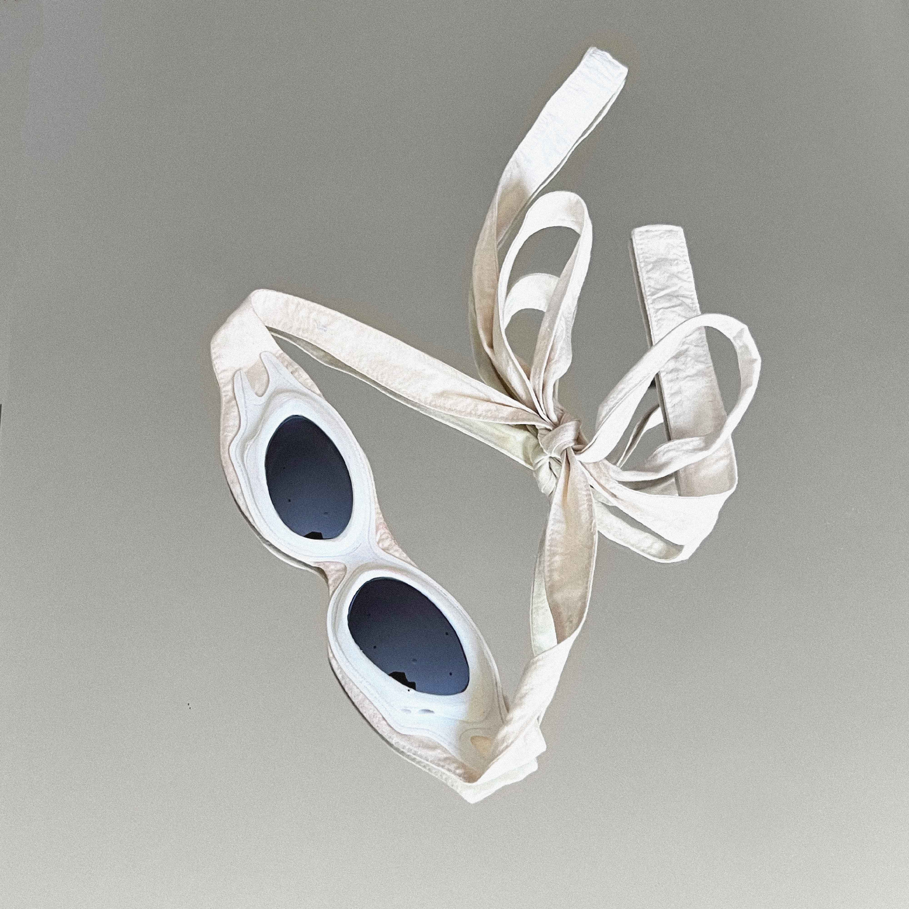
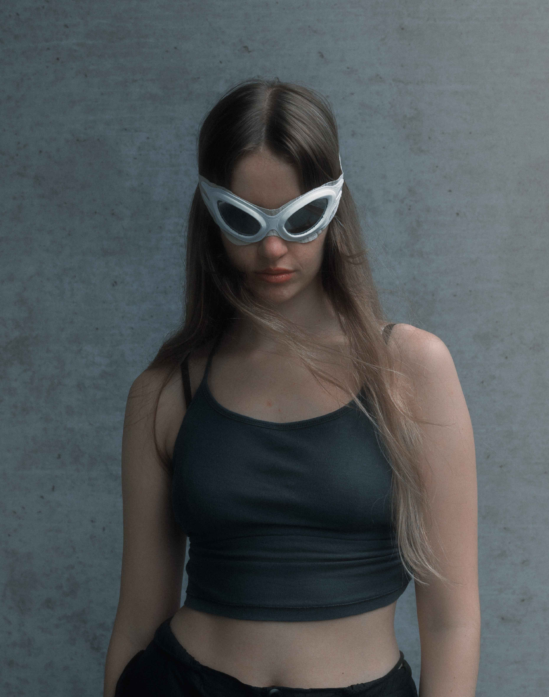
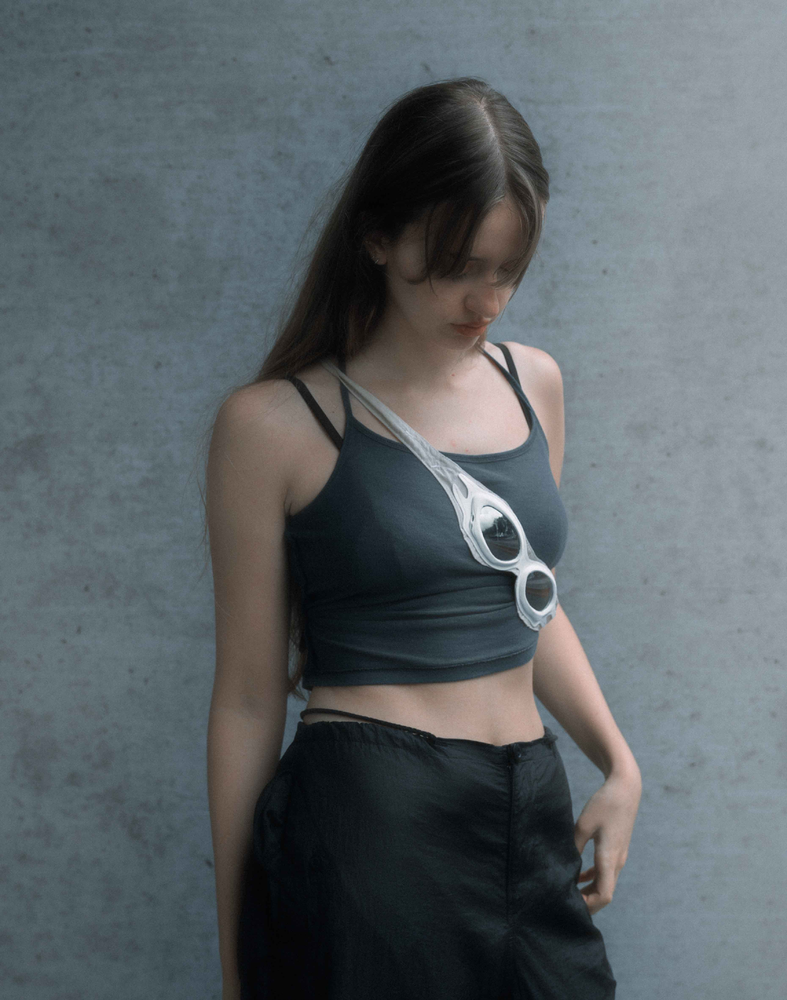
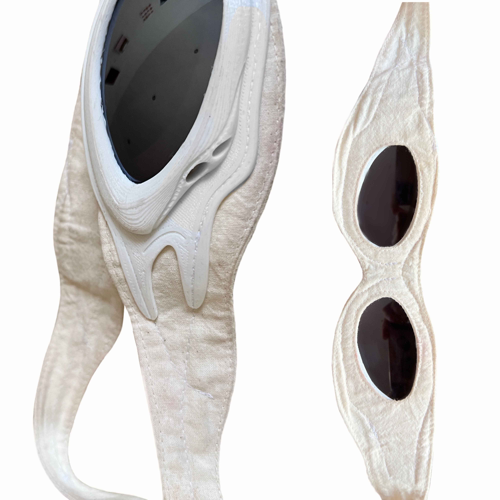
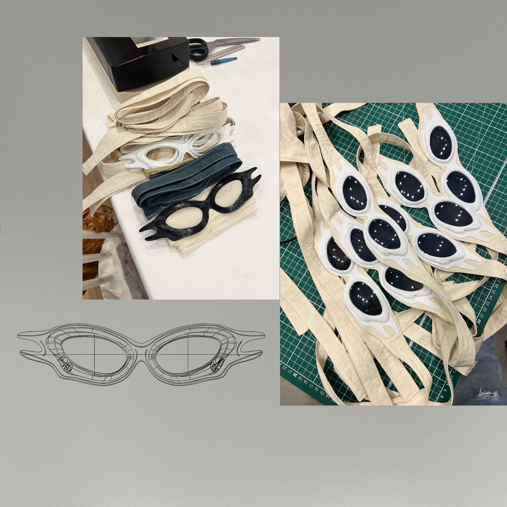
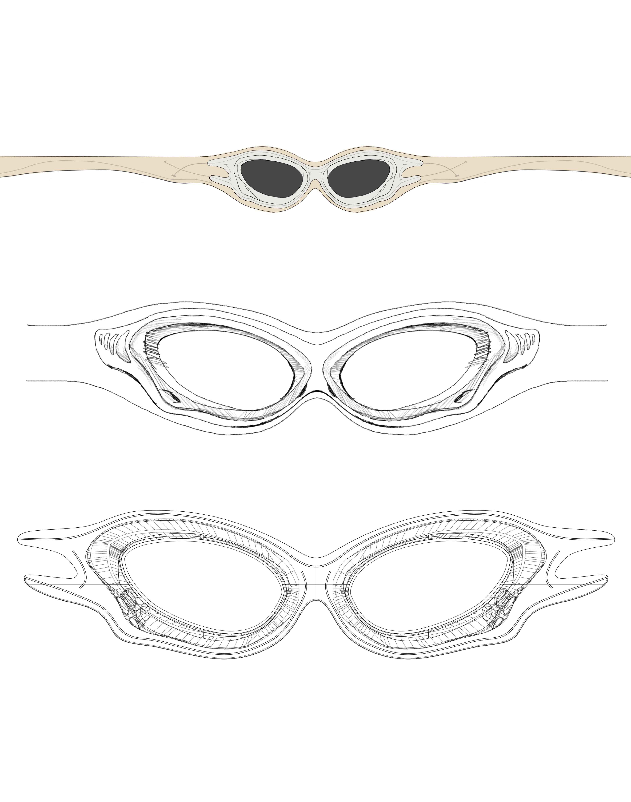
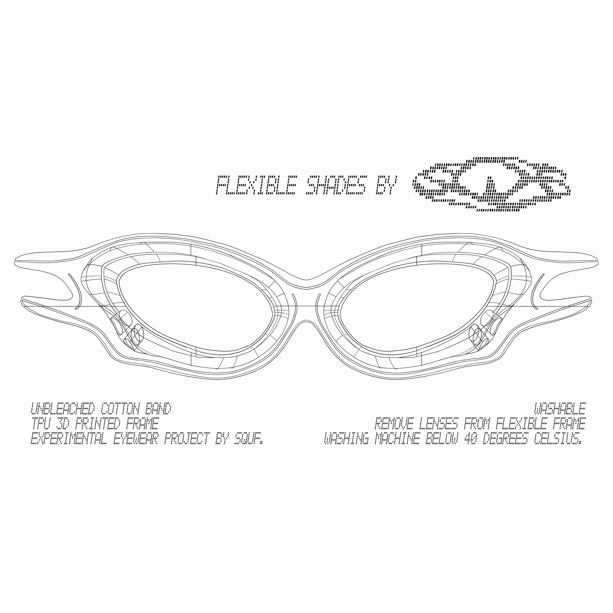
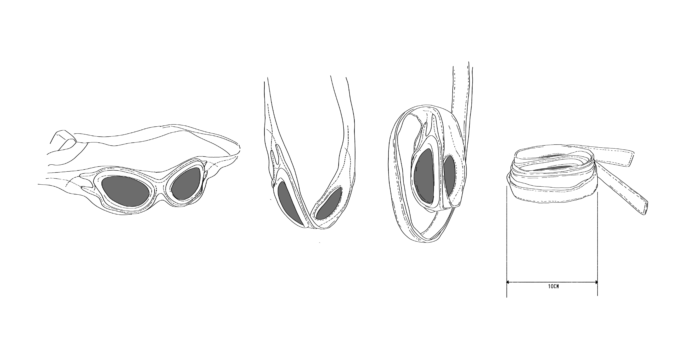
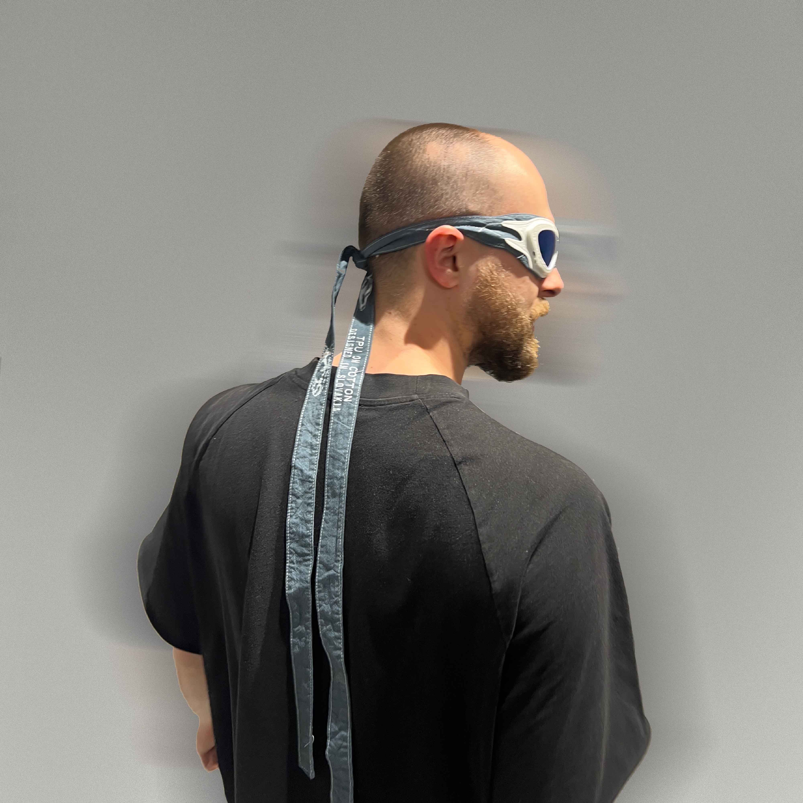